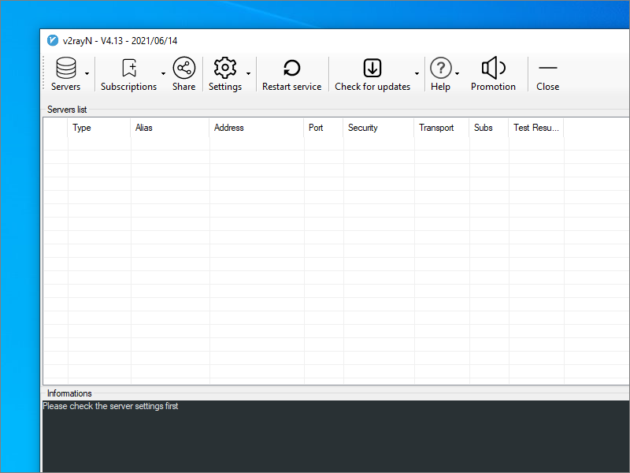
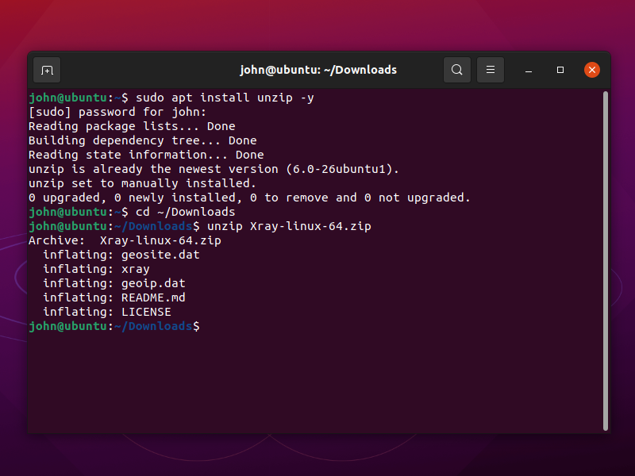
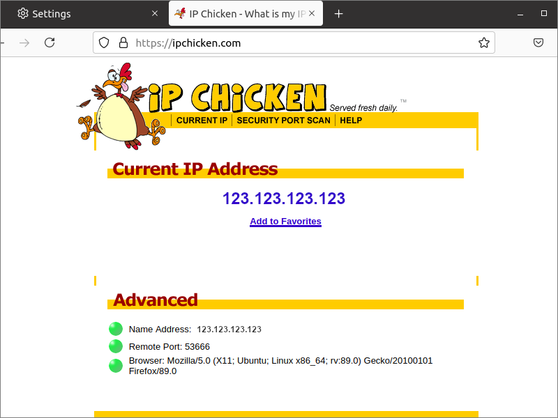

VLESS with Wulabing XRay Script
Xray is a fork of V2Ray. It is an important tool for accessing the international Internet. Xray/V2Ray offer a far wider range of features than Shadowsocks.
VLESS is a simplified protocol that can result in performance improvements over the original VMESS protocol. VLESS does not depend on the system time being correct. Its authentication method continues to be Universally Unique Id (UUID), but the alterId of the VMESS protocol is not required.
This page shows you how to install XRay with the VLESS protocol using the Wulabing script. We give instructions for Debian 10+ (or Ubuntu) and CentOS 8 servers. Note that CentOS 8 goes end-of-life on December 31, 2021, and so Debian/Ubuntu are preferred.
1. Server
1.1. Obtain VPS and Domain Name
First, you’ll need to rent a virtual private server (VPS). In the rest of this article, we’ll write its IP address as zz.zz.zz.zz.
Also obtain a domain name. We will give yyyyy.xyz as our example domain name, and www.yyyyy.xyz as our example hostname (fully qualified
domain name) for the XRay server.
Create a DNS A record pointing from hostname www.yyyyy.xyz to the server IP address zz.zz.zz.zz.
1.2. Update Server
Update your server. On CentOS 8:
yum update -y
On Debian 10+ or Ubuntu:
apt update && apt upgrade -y
1.3. Open Firewall
If you have implemented a firewall on your server, you must open port 80 and port 443. On CentOS 8:
firewall-cmd --permanent --zone=public --add-service=http
firewall-cmd --permanent --zone=public --add-service=https
firewall-cmd --reload
On Debian 10+ or Ubuntu (assuming you used nftables to build your firewall):
nft add rule inet filter input tcp dport { http, https } counter accept
nft list ruleset > /etc/nftables.conf
Here is a template for a completed /etc/nftables.conf, where xx.xx.xx.xx represents your workstation’s IP address:
table inet filter {
chain input {
type filter hook input priority filter; policy drop;
ct state established,related counter packets 0 bytes 0 accept
iif "lo" counter packets 0 bytes 0 accept
ip protocol icmp icmp type echo-request counter packets 0 bytes 0 accept
ip6 nexthdr ipv6-icmp icmpv6 type echo-request counter packets 0 bytes 0 accept
tcp dport 22 ip saddr xx.xx.xx.xx/32 counter packets 0 bytes 0 accept
tcp dport { 80, 443 } counter packets 0 bytes 0 accept
}
chain forward {
type filter hook forward priority filter; policy accept;
}
chain output {
type filter hook output priority filter; policy accept;
}
}
If you used iptables or ufw to build a firewall, you must issue the equivalent commands to open ports 80 and
443.
1.4. Download and Run Wulabing Script
Download and run the Wulabing script. (On CentOS, you may need to do yum install wget before this will work.)
wget -N --no-check-certificate -q -O install.sh "https://raw.githubusercontent.com/wulabing/Xray_onekey/main/install.sh"
chmod +x install.sh
bash install.sh
The script displays a menu offering the following options. This post adds English translations to the prompts:
Xray 安装管理脚本 installation management script [1.3.3]
---authored by wulabing---
https://github.com/wulabing
当前已安装版本 Currently installed version：None
—————————————— 安装向导 ——————————————
0. 升级 脚本 Upgrade script
1. 安装 Install Xray (VLESS+TCP+XTLS/TLS+Nginx)
2. 安装 Install Xray (VLESS+TCP+XTLS/TLS+Nginx 及 VLESS+TCP+TLS+Nginx+WebSocket 回落并存模式)
—————————————— 配置变更 ——————————————
11. 变更 change UUID
12. 变更 change TLS 最低适配版本 minimum version
13. 变更 change 连接端口 connection port
14. 变更 change WebSocket PATH
—————————————— 查看信息 ——————————————
21. 查看 View 实时访问日志 real-time access log
22. 查看 View 实时错误日志 real-time error log
23. 查看 View Xray 配置链接 configuration link
—————————————— 其他选项 ——————————————
31. 安装 Install 4 合 1 BBR、锐速安装脚本
32. 安装 Install MTproxy(不推荐使用,请相关用户关闭或卸载)
33. 卸载 Uninstall Xray
34. 更新 Update Xray-core
35. 安装 Install Xray-core 测试版(Pre)
36. 手动更新SSL证书 Manually renew the SSL certificate
40. 退出 Exit
请输入数字 Please key in numbers：
Choose option 1 to install XRay and Nginx.
After doing some checks and installing some packages, the script asks you some more questions.
请输入你的域名信息(eg:www.wulabing.com):
Please enter your domain information (e.g. www.wulabing.com):
Put your hostname (fully qualified domain name) for the server, which in our example is www.yyyyy.xyz.
The script checks that the domain name resolves to this server’s IP address.
Next it asks for the port you want to connect on:
请输入连接端口（default:443）:
Please enter the connection port (default 443):
We recommend you use the default port 443.
You are asked to select which versions of TLS you want to support:
请选择支持的 TLS 版本（默认：TLS1.3 only）:
1: TLS1.1, TLS1.2 and TLS1.3（兼容模式）
2: TLS1.2 and TLS1.3 (兼容模式)
3: TLS1.3 only
请输入：
We recommend you choose option 2, TLS 1.2 and TLS 1.3.
请输入用于注册域名的邮箱(eg:xxx@gmail.com):
Please enter the email address used to register the domain name
Enter your email address.
At the end of the script’s run, it displays the parameters for the client:
Xray 配置信息
地址（address）: www.yyyyy.xyz
端口（port）： 443
用户 ID（UUID）： 484d6bb9-4af1-4f5b-b9f6-ff8b348dcdda
流控（flow）： xtls-rprx-direct
加密方式（security）： none
传输协议（network）： tcp
伪装类型（type）： none
底层传输安全： xtls 或 tls
It also displays the parameters as a vless:// link. For example:
[OK] URL 链接（VLESS + TCP + TLS）
[OK] vless://484d6bb9-4af1-4f5b-b9f6-ff8b348dcdda@www.yyyyy.xyz:443?security=tls&flow;=xtls-rprx-direct#TLS_wulabing-www.yyyyy.xyz
You need these details, so copy them to your workstation’s clipboard and possibly also a text editor on your workstation.
If you lose the details, you can redisplay them by rerunning the script and choosing option 23:
bash install.sh
23
The script stores the server configuration JSON in the file /usr/local/etc/xray/config.json. You can display this file if you are interested:
cat /usr/local/etc/xray/config.json
Also, you can visit your web server https://www.yyyyy.xyz in a browser to see the camouflage website (WebGL Fluid Simulation) running on Nginx.
2. Client
2.1. Windows
Here is how to connect to your Xray server from a Windows client computer.
We will use V2RayN, the graphical user interface for V2Ray and Xray on the Windows platform.
Open a browser and visit GitHub. Download v2rayN-Core.zip for the latest
release. Version 3.21 and up support VLESS. After you’ve downloaded v2rayN-Core.zip, unzip the zip file.
Double-click v2rayN.exe to launch V2RayN. The first time you run the program, you may get a warning from Windows Defender SmartScreen to say Windows
protected your PC. Click More info, then click Run anyway.
The V2RayN icon appears in the system tray toward the bottom right of your Windows desktop. Click the V2RayN icon in the system tray to bring up the V2RayN interface.
Under the Help button (the question mark icon), select 语言-[中文简体] for simplified Chinese, or Language-[English] for English.
Restart V2RayN to see the interface in the new language.
If you want to add a server manually, then click Servers to see the available options. However, we will use an easier method. This is to copy and
paste the vless:// URL. In our example, the link was:
vless://484d6bb9-4af1-4f5b-b9f6-ff8b348dcdda@www.yyyyy.xyz:443?security=tls&flow;=xtls-rprx-direct#TLS_wulabing-www.yyyyy.xyz
To copy and paste the vless:// URL:
- Copy the link to your Windows clipboard
- Click on the Server list area of your V2RayN window
- Do Ctrl+v to paste the new server into V2RayN
Highlight your server’s row, and press Enter to connect to it. Messages appear in the box at the bottom.
After the connection is made, you can optionally close the V2RayN panel. V2RayN continues to run and is accessible via its icon in the system tray.
Now that your Xray client (V2RayN) is connected to the Xray server, configure your browser to send traffic to the XRay client. (You could alternatively specify a system-wide proxy server in the Windows Settings app, but in this tutorial we proxy at the browser level.)
In Firefox, click the hamburger menu, then select Settings. Select the General tab. Scroll down to the bottom to the heading Network Settings. Click the Settings button.
- Select Manual proxy configuration.
- Fill in
127.0.0.1in SOCKS Host. - Fill in
10808in the Port. Note that V2RayN uses port 10808 in contrast to the more common port 1080 for the local proxy. - Select SOCKS v5.
- Check Proxy DNS when using SOCKS v5.
In Chrome, you can do the same thing by installing the SwitchyOmega extension and configuring it to use the SOCKS5 proxy on 127.0.0.1 port
10808.
Your browser is now configured to proxy traffic to the V2RayN client, and the client is in turn connected to your XRay server. Your browsing requests and responses are being transmitted, totally encrypted, via the remote XRay server.
Check the end-to-end functionality to confirm that V2RayN and Firefox/Chrome are configured correctly. With V2RayN still running, and Firefox/Chrome still proxied, visit IP Chicken. You should see the IP address of the server, not your local client.
2.2. Linux
Here is how to connect to your Xray server from a Linux client computer.
Open Firefox. Download the latest XRay for 64-bit Linux from GitHub. At the time of
writing, it is version 1.4.2. The file to download for a 64-bit PC running Linux is Xray-linux-64.zip.
To unzip Xray-linux-64.zip, open a terminal and issue the commands:
sudo apt install unzip -y
cd ~/Downloads
unzip Xray-linux-64.zip

In the terminal (or in a text editor), create an XRay client configuration file named config.json:
vi config.json
Insert the template below, substituting in your actual values for our example address and id:
{
"inbounds": [
{
"port": 1080,
"listen": "127.0.0.1",
"protocol": "socks",
"sniffing": {
"enabled": true,
"destOverride": ["http", "tls"]
},
"settings": {
"auth": "noauth",
"udp": false
}
}
],
"outbounds": [
{
"protocol": "vless",
"settings": {
"vnext": [
{
"address": "www.yyyyy.xyz",
"port": 443,
"users": [
{
"id": "484d6bb9-4af1-4f5b-b9f6-ff8b348dcdda",
"alterId": 0,
"security": "auto",
"encryption": "none",
"flow": ""
}
]
}
]
},
"streamSettings": {
"network": "tcp",
"security": "tls",
"tlsSettings": {
"allowInsecure": false
}
}
}
]
}
Save the file with your revised values in it.
In your terminal emulator, start the V2Ray client running:
./xray -config=config.json

Leave the terminal open, with Xray running in it.
Open Firefox. From the hamburger menu, select Settings. On the General page, in the Network Settings section, click Settings. Set the network settings as follows:
- Select Manual proxy configuration.
- Fill in
127.0.0.1in SOCKS Host. - Fill in
1080in the Port. - Select SOCKS v5.
- Check Proxy DNS when using SOCKS v5.
Click OK.
Firefox now sends requests to the XRay client, which sends them to the XRay server. Do an end-to end test by visiting a site such as IP Chicken.
2.3. macOS
For macOS clients, use the latest release of Qv2ray from GitHub. The file to download is
named Qv2ray.v2.7.0-pre2.macOS-x64.dmg.
2.4. Android
Install V2RayNG from either Google Play or GitHub. On Android, V2Ray/Xray clients act more like VPNs, so there is no need to proxy the browser.
2.5. iOS
There are no free clients for iOS. Look in the iOS App Store for Shadowrocket.
3. Get Help and Report Issues
If you have any other problems, SSH into your server to take a look at the logs. To view the V2Ray error log, enter the command:
tail /var/log/xray/error.log
To view the Nginx error log, enter the command:
tail /etc/nginx/logs/error.log
For the Wulabing script:
- Telegram support group https://t.me/wulabing_v2ray
- Telegram announcement channel https://t.me/wulabing_channel
If you discover an issue, report it on the official GitHub issues page for the software you are using:
Appendix A. Server Configuration File
Here is a template of the file /usr/local/etc/xray/config.json created by the Wulabing script.
{
"log": {
"access": "/var/log/xray/access.log",
"error": "/var/log/xray/error.log",
"loglevel": "warning"
},
"inbounds": [
{
"port": 443,
"protocol": "vless",
"settings": {
"clients": [
{
"id": "484d6bb9-4af1-4f5b-b9f6-ff8b348dcdda",
"flow": "xtls-rprx-direct"
}
],
"decryption": "none",
"fallbacks": [
{
"dest": 60000,
"alpn": "",
"xver": 1
},
{
"dest": 60001,
"alpn": "h2",
"xver": 1
}
]
},
"streamSettings": {
"network": "tcp",
"security": "xtls",
"xtlsSettings": {
"minVersion": "1.2",
"certificates": [
{
"certificateFile": "/usr/local/etc/xray/self_signed_cert.pem",
"keyFile": "/usr/local/etc/xray/self_signed_key.pem"
},
{
"certificateFile": "/ssl/xray.crt",
"keyFile": "/ssl/xray.key"
}
]
}
},
"sniffing": {
"enabled": true,
"destOverride": [
"http",
"tls"
]
}
}
],
"outbounds": [
{
"protocol": "freedom"
}
]
}
Appendix B. Client Configuration File
The V2RayN GUI stores its server configurations internally in a file named guiNConfig.json. V2RayN converts this to a standard XRay client
configuration file named config.json. It will look something like this:
{
"log": {
"access": "",
"error": "",
"loglevel": "warning"
},
"inbounds": [
{
"tag": "socks",
"port": 10808,
"listen": "127.0.0.1",
"protocol": "socks",
"sniffing": {
"enabled": true,
"destOverride": [
"http",
"tls"
]
},
"settings": {
"auth": "noauth",
"udp": true,
"allowTransparent": false
}
},
{
"tag": "http",
"port": 10809,
"listen": "127.0.0.1",
"protocol": "http",
"sniffing": {
"enabled": true,
"destOverride": [
"http",
"tls"
]
},
"settings": {
"udp": false,
"allowTransparent": false
}
}
],
"outbounds": [
{
"tag": "proxy",
"protocol": "vless",
"settings": {
"vnext": [
{
"address": "www.xxxxx.xyz",
"port": 443,
"users": [
{
"id": "484d6bb9-4af1-4f5b-b9f6-ff8b348dcdda",
"alterId": 0,
"email": "t@t.tt",
"security": "auto",
"encryption": "none",
"flow": ""
}
]
}
]
},
"streamSettings": {
"network": "tcp",
"security": "tls",
"tlsSettings": {
"allowInsecure": false
}
},
"mux": {
"enabled": false,
"concurrency": -1
}
},
{
"tag": "direct",
"protocol": "freedom",
"settings": {}
},
{
"tag": "block",
"protocol": "blackhole",
"settings": {
"response": {
"type": "http"
}
}
}
],
"routing": {
"domainStrategy": "IPIfNonMatch",
"rules": [
{
"type": "field",
"inboundTag": [
"api"
],
"outboundTag": "api"
},
{
"type": "field",
"outboundTag": "proxy",
"domain": [
"geosite:google"
]
},
{
"type": "field",
"outboundTag": "direct",
"domain": [
"domain:example-example.com",
"domain:example-example2.com"
]
},
{
"type": "field",
"outboundTag": "block",
"domain": [
"geosite:category-ads-all"
]
}
]
}
}
Updated 2021-06-16